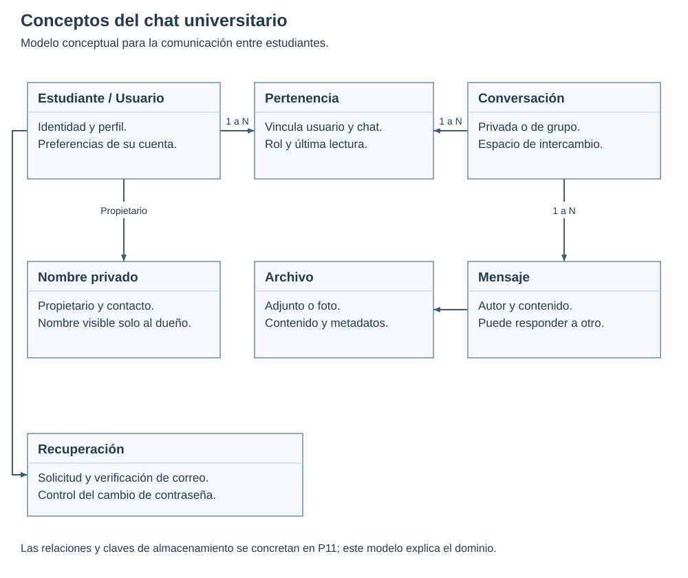

Paso 6 de 12 · Clases de análisis
Los elementos del sistema
Las cuentas, conversaciones y mensajes que forman el chat.
Conceptos del dominio
El estudiante es la persona que utiliza AzChat; usuarios será el nombre técnico de sus cuentas. Este modelo describe lo necesario para que los estudiantes se comuniquen antes de decidir las columnas SQL.
| Concepto | Qué representa |
|---|---|
| Estudiante o usuario | Identidad con perfil y preferencias propias. |
| Conversación | Espacio de intercambio privado o grupal. |
| Pertenencia | Relación entre estudiante y conversación, con rol y lectura propios. |
| Mensaje | Intervención de un autor; puede responder a otra e incluir archivos. |
| Archivo | Contenido adjunto o foto con metadatos. |
| Nombre privado | Nombre que un estudiante asigna a un contacto solo para su propia vista. |
| Recuperación | Solicitud de autorización y desafío de verificación del correo. |
Separaciones que importan
Un estudiante conserva su identidad al cerrar sesión. Un grupo puede continuar cuando sale uno de sus miembros. Fijar, silenciar o leer es una decisión de cada participante, no un cambio común del grupo. Por eso la pertenencia tiene información propia.
Un nombre privado no modifica el perfil del compañero. Una solicitud aprobada tampoco demuestra acceso al correo. Separar estos conceptos evita mezclar preferencias, permisos y pruebas de identidad. Las relaciones persistentes están en P11.
Modelo conceptual del sistema


Ampliar diagramaDocumentos y modelos
Consultar la documentación completa en PDF. Esta página y el documento del paso describen el mismo diseño del sistema.
Actualización 2.11 por solicitud de usuarios
escuelas contiene el catálogo y usuarios.escuela identifica la escuela. anuncios guarda autor, texto, destinos, fecha y clave de envío. comentarios_anuncio guarda padre, texto e imagen; una clave foránea compuesta impide responder a un comentario de otro anuncio. respuestas_anuncio vincula anuncio, usuario y chat y evita duplicados. Las tablas están protegidas con RLS y el rol privado del servidor; anon y authenticated no acceden directamente.
Consultar la solicitud, las decisiones y los criterios de aceptación.